Exercise 2: Storing data with the BPEL 2.0 process
Expected duration: 30 minutes
Introduction
In this
exercise, the BPEL process from Exercise 1
is enriched to store the submitted poll data into a database. The Java
DB database that is bundled with JDK 6 will be leveraged as the data
tier.
The goal of this exercise is to introduce Binding Components
and learn how to use them. Specifically, this exercise uses the
Database Binding
Component. Steps to build this exercise are:
In JBI, a Binding Component allows the ESB to communicate
with external systems i.e. it is an 'adapter' or 'transport' to
Enterprise Information Systems. Essentially,
Binding Components sit on the boundary of the ESB. For inbound data,
their primary function is to receive messages in proprietary formats
and transform them into a format that is understood and can be consumed
by the internals of GlassFish ESB (XML), and ultimately other engines
or components connected to the bus. This
process or transformation is termed as Normalization.
For outbound data, binding components de-normalize
messages into the expected propriety formats, as understood by the
external systems.
The Database Binding Component can be used
to communicate with any JDBC database and will be used to communicate
with the Java DB database in this exercise.
The Database BC receives normalized data in XML format from
BPEL. It
uses the prepared statement, as configured by the user, to write into
Java DB Database.
Database BC can be used for table operations (as in this
exercise),
prepared statements and stored procedures. Only the
simple table insert use case will be covered in this exercise.
Create and configure a Database Binding
Component
Verify Java DB connectivity from GlassFish runtime
The GlassFish instance should now have a JDBC connection
pool and JDBC resource that points to a new Java DB instance. If this
step was not completed, refer back to Prerequisites before
continuing with this exercise.
From the Servicestab,
start GlassFish, then right-click and select View Admin Console
to open the GlassFish Admin Console, as shown below
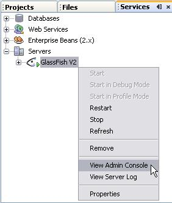
After logging in from the browser as admin/adminadmin, on the
left
pane, browse to Resources > JDBC > Connection Pools
Open the Java DB connection pool that was configured in Prerequisites called JavaDBPool.
Click the Ping button to verify that the Java DB
connection is still alive.
On the left pane, expand Resources > JDBC > JDBC
Resources and open the pre-configured JDBC Resource named jdbc/javadb.
Ensure that it is using the JavaDBPool as shown below. Also,
note the JNDI Name used by this resource (jdbc/javadb) since
that will be used in the next step.
Note: This
mimics
a
real-world deployment where the runtime
configuration is usually setup by 'operations' personnel or a systems
administrator.
For instance, a production database server's connection details and
password may not be made available to the GlassFish ESB developer.
However, a JNDI name
referring to that resource will be provided to the developer for use in
their application.
Verify Java DB Connection from NetBeans IDE
If a Java DB connection has not yet been created from Netbeans,
run the steps as outlined in Prerequisites
Right-click on the connection and select connect (you have to
reconnect after each NB restart). The password is same as user name (javaone)
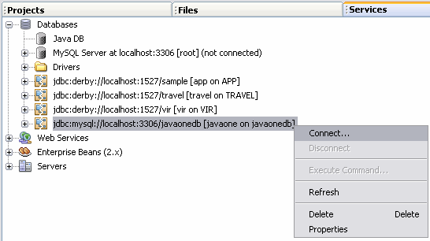
It is important to be connected to the Java DB database from
NetBeans, otherwise the
wizard in the next step will not be able to get the table structure.
Once connected, expand the Tables section
and verify that
the JAVAONEPOLLS table is present. If it is not possible to
connect or see the JAVAONEPOLLS table after connecting to the
database, it is likely that the connection properties may be incorrect
or incomplete. Ensure that the connection looks exactly like this: jdbc:derby://localhost:1527/javaonedb
[javaone on JAVAONE]
If not, right click on the connection and select Properties.
Make
sure your properties are the same as shown below and reconnect:
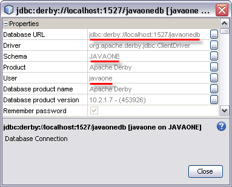
Create a WSDL for the Database Binding Component
Navigate to the BPEL project created in Exercise 1.
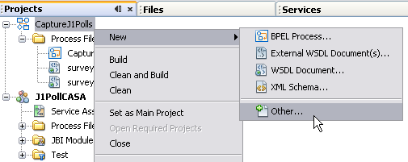
Right click and choose the option to create a new WSDL from
Database, from the SOA
category seen below
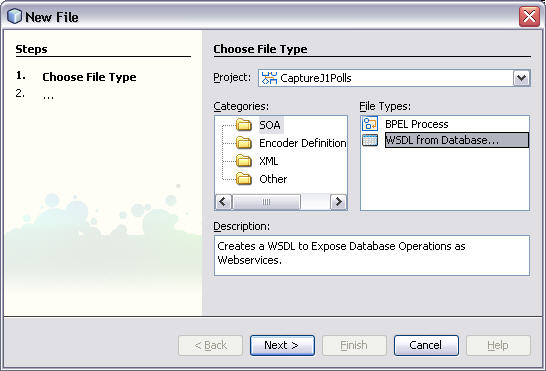
Note: This
launches the NetBeans wizard that can generate a WSDL interface/wrapper
for the Database table. As you can tell, this means the
Database table will be treated as another service, which can be
consumed by other GlassFish
ESB
components through it's WSDL.
Click Next to proceed
and give the wsdl a name (JavaDBPollsTable
in this example)
From the URL drop-down list, select the database connection
that was
created for Java DB.
Then select Tables since the
scenario only calls for a simple table insert. Click Next.
This will bring up
the list of tables in Java DB.
Note: If
you don't see your Java DB connection in the Data Source drop-down
list,
it means you either haven't created the connection or you forgot to
click connect from NetBeans
Services.
Select the table named JAVAONEPOLLS (it
should be the
only one on the available list), so that it shows up on the right hand Selected Tables pane.
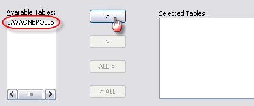
Click Next, then
accept the defaults in the next screen and
click Next again
In the following screen, enter the JNDI Name that was used to
setup
the
GlassFish JDBC Resource (jdbc/javadb).
This is how the design time DB WSDL is linked to a concrete runtime
JDBC resource.
Note: This is
how the generated application code is portable across environments
without
having to change the binary. The 'test', 'development', 'production',
etc. GlassFish app servers can all point to different instances of Java
DB, but they will all need to use the same JNDI Name to refer to
this JDBC resource. This ensures the same service assembly can run on
all environments without design time changes. This decoupling of
runtime configuration and
business logic results in portability, along with clear separation of
roles (developer/operation). This also allows compliance to regulations
like Sarbanes-Oxley, making it an IT 'best practice'.
Click Finish.
The consequence of the last step is the creation of the DB
Binding Component artifacts
shown in the figure below - a WSDL
document exposing common database operations and an XML schema file
representing the JavaOnePolls table.
Customize the SQL used in the Database BC WSDL
Double click the JavaDBPollsTable.wsdl
file to open it.
Looking closely at the WSDL editor, you will notice this is a
special WSDL document that comes pre-filled with Database specific
operations (find, delete, insert, update and poll). Also, it allows the
user to input SQL statements in the Bindings section.
Since the scenario only requires DB BC to write poll data to Java
DB, only the insert operation
needs to be configured.
Under the Bindings section of
the WSDL, select the insert operation
and open
the jdbc:input object as shown
below. This provides the option to modify the
SQL associated with the insert.
Click the ellipsis next to the sql
property to open the SQL window. In this window, modify
the generated SQL as shown below
(remove
column REC_ID and the
corresponding ? from the
values - REC_ID is an auto incremented key populated by Java DB itself
and cannot be specified as input)
Now, select the paramOrderfor
the Insert operation and remove REC_ID from the
params so it
is in sync with the SQL
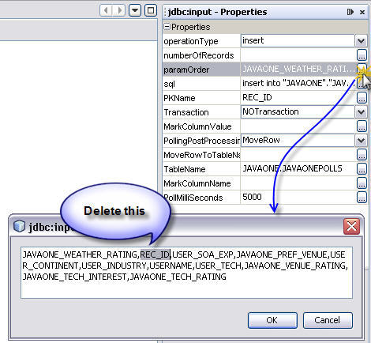
Note: Since
REC_ID is auto generated by the database, it should not be on
the list of programmatically populated parameters in the paramOrder
list.
Validate the WSDL and save.
Add the Database BC insert operation to
the
BPEL process
Now that the DB BC's WSDL is available, it can be added to the BPEL
process
created in Exercise 1.
The BPEL process orchestrates the Database Insert by invoking the DB
BC and passing in the business data.
Import the DB-BC WSDL into the BPEL process
Drag and drop the WSDL corresponding to the DB BC from the
project tree to the Partner
Link pane in the BPEL (the one on the right hand side of the BPEL
canvas).
Rename
the default partner link name to PartnerLinkJavaDB
Invoke the insert operation on DB BC
Time to introduce another BPEL 2.0 construct: Invoke.
"Invoke" is the
activity used in BPEL to interact with other service providers. This
allows the BPEL process to exchange information
and orchestrate other services using either Request-Response or Asynchronous Message
Exchange Patterns.
Drag and drop the Invoke
activity as shown in the figure below, between the getPolls receive
activity and mapResponse
assign activity.
Edit the Invoke activity
- rename it to storeData,
select the
PartnerLink created for the Java DB wsdl and create the default
input
and output variables to use with this wsdl operation invoke.
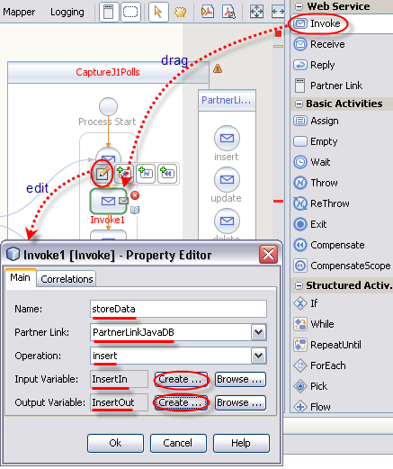
The resulting BPEL process should look like the one illustrated
below.
Map the
poll data input to Java DB table
Before invoking the storeData operation on Java DB, the data to
store has to be specified.
Drag a new Assign
activity and place it just before the storeData
invoke.
Rename the Assign to mapDataToDB.
Double-click the assign activity or click on the Mapper view to
specify mappings for this assign.
Map each node on the XML input (variable JavaOnePollOperationIn)
on
the
left hand side to the corresponding field of the Database input on the
right hand side (variable InsertIn).
The names on the right hand side and left hand side are very similar,
so the mapping should be obvious. If not, you may refer to the figure
and mapping table below.
Note: You
have to also expand the part
under each variable to see nodes shown in the diagram
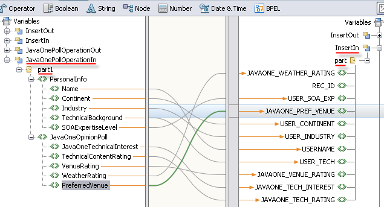
Source
Node
Target
Node
PersonalInfo -> Name
USERNAME
PersonalInfo ->
Continent
USER_CONTINENT
PersonalInfo ->
Industry
USER_INDUSTRY
PersonalInfo ->
TechnicalBackground
USER_TECH
PersonalInfo ->
SOAExpertiseLevel
USER_SOA_EXP
JavaOneOpinionPoll ->
JavaOneTechnicalInterest
JAVAONE_TECH_INTEREST
JavaOneOpinionPoll ->
TechnicalContentRating
JAVAONE_TECH_RATING
JavaOneOpinionPoll ->
VenueRating
JAVAONE_VENUE_RATING
JavaOneOpinionPoll ->
WeatherRating
JAVAONE_WEATHER_RATING
JavaOneOpinionPoll ->
PreferredVenue
JAVAONE_PREF_VENUE
Note: The
mapDataToDB may show some warnings around type
mismatch
(types of "From" and "To" activities are
different:
"int" and "string"),
but these can be ignored safely as this combination of types gets
converted automatically at runtime.
Map
the response from Java DB to the Web Service response
Finally, the result of the Java DB insert needs to be
returned
as the response to the web service. Exercise 1 originally returned a
hard coded value of 'success'.
Open the mapResponse
activity in the mapper and delete the
string literal assignment 'success' that was originally there.
Replace it with the output of the Java DB insert
(variable InsertOut)
as
seen below.
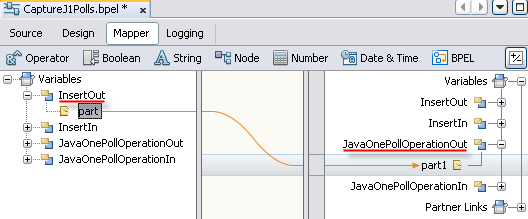
Build, Deploy and Test
Refresh the Composite
Application
to use the updated BPEL and DB BC
The BPEL is completed so you may save it. Ignore the
'integer
to
string' warnings during build or validation.
To refresh the Composite Application with the latest DB
partners, right-click on the Composite Application project and select Clean and Build. This will build the
BPEL project and update CASA with the
latest binaries.
Now right click the Service Assembly and select Edit as
shown
below and make sure the connections in CASA are as shown below
The application is now ready to be deployed and
tested.
Deploy the Service
Assembly
Build and Deploy the application similar to Exercise 1
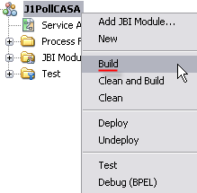
Test the new
application
As with the previous exercise, go to your front end web
page
and
enter your name and other
values, then submit the poll.
If there was an error during the insert, it will be printed
next to
the Submit button. If there
were no errors, go to the database to
confirm this record was inserted successfully.
You can verify that your record has been inserted using the
NetBeans connection to the Java DB database as seen below.
Make sure
you
are connected (if not, right click on connection and select connect).
Expand the tables and browse to the JAVAONEPOLLS table.
Right-click and
select View Data... This will
run a SQL query that returns all the
records in order of insertion.
Make sure your username
and other
uniquely identifiable poll entry values show up at the bottom to
confirm your insert was successful.
Summary
In this exercise, you were introduced to the Database BC and used it
with a
BPEL process to orchestrate a database operation to persist data into a
Java DB
Database. You have successfully completed this tutorial. Click on the Forward to summary link below to
learn
more.